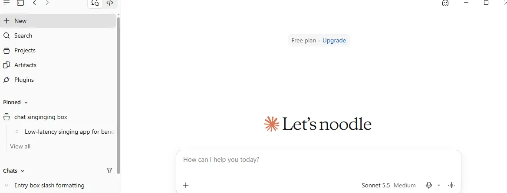
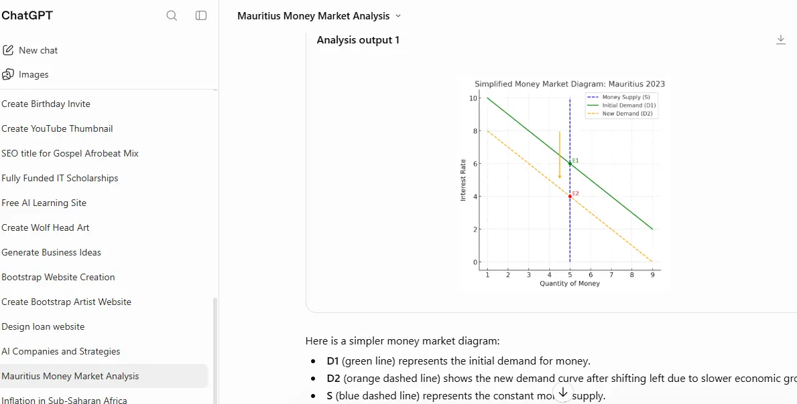

AI ASSISTANT
ChatGPT
General-purpose AI assistant for exploring ideas, drafting, summarising, analysis and a wide range of everyday business tasks.
Consider it forVersatile support across different business tasks.
Visit official website Explore AI tools for writing, research, images, video, music, voice, design, productivity and business automation. Search by tool name or choose a category to find software for the work you do.

Discover practical AI tools for writing, research, design, meetings and productivity. Explore what each tool can help you do, with practical insights and examples from real-world use.
Read the complete guide →A practical guide for freelancers, entrepreneurs and small business owners.

Explore 12 useful AI tools for freelance work, from research and writing to design, meetings, video, automation and client management. Compare their uses and discover practical ways to build a toolkit around your services.
Read the freelancer guide →A practical guide to choosing tools for a more efficient freelance business.
Search by tool name or filter by the job you want to get done.
Showing all tools
General-purpose AI assistant for exploring ideas, drafting, summarising, analysis and a wide range of everyday business tasks.
AI assistant from Anthropic that can help with writing, analysis, problem-solving and working through longer documents.
Google's AI assistant for asking questions, developing ideas and working with supported Google products and services.
Microsoft's AI assistant offering chat and AI capabilities across supported Microsoft products and workflows.
AI-powered search and research experience designed to answer questions and point users to supporting web sources.
Writing support for checking grammar, improving clarity and adjusting tone across supported writing workflows.
Visual communication platform with AI-assisted features for creating designs, presentations and marketing content.
Connected workspace for notes, documents and project information, with AI features available in supported plans.
Meeting assistant focused on capturing conversations, producing transcripts and generating meeting summaries.
AI meeting assistant that helps record, transcribe, summarise and organise conversations, subject to meeting and account settings.
Automation platform for connecting supported apps and creating workflows, including AI-powered steps and tools.
Visual automation platform for designing workflows that connect apps, move information and coordinate processes.
AI image-generation platform used to create detailed visual concepts and artwork from text prompts.
AI creative platform for generating and refining images and other visual assets.
Image-generation tool known for workflows involving images, typography and graphic concepts.
Adobe's generative AI tools for creating and editing visual content in supported creative workflows.
AI design platform for generating images and vector-style visual assets.
Google's AI filmmaking workspace for creating and developing video scenes with Google's generative media models.
Google's generative video model for creating video from prompts and supported visual inputs.
Creative AI platform with video-generation and editing tools for visual storytelling.
AI video-generation platform for creating clips from text and image inputs.
AI video tool for creating and transforming short-form visual clips.
Luma's generative video tools for creating clips and visual sequences from prompts and inputs.
AI video-generation service for turning prompts and images into short video clips.
AI music platform for generating songs and musical ideas from text prompts.
AI music-generation platform for creating and exploring song ideas.
AI music tool focused on generating and customising music for creative projects.
AI music composition platform for creating instrumental and soundtrack-style pieces.
AI audio platform offering text-to-speech, voice tools and supported audio-generation workflows.
AI voice platform for creating voiceovers from written scripts.
Text-to-speech tools that turn written content into spoken audio.
AI video platform for creating avatar-led videos and supported video translation workflows.
AI video platform focused on presenter-style videos for business communication and learning.
Audio and video editing software with transcript-based and AI-assisted editing features.
Video-editing platform with tools for creating and adapting short-form and social content.
Video-repurposing tool that helps turn longer recordings into shorter clips.
AI-assisted tool for creating presentations and other visual documents.
Try another search term or choose “All tools”.
Before paying for an AI tool, identify the task you want to improve, test the available free access where possible, check usage limits and review how the provider handles your data.